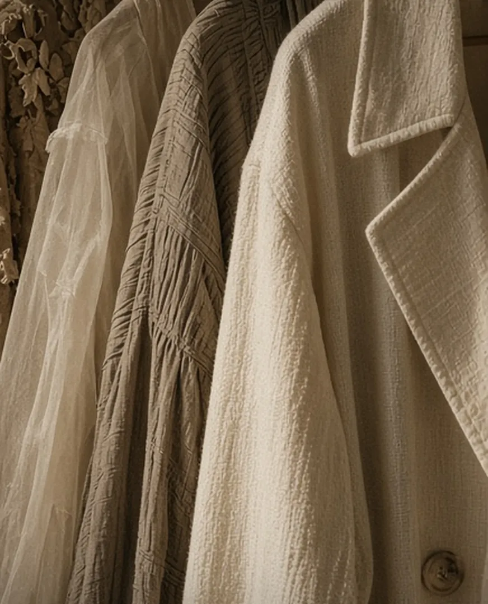
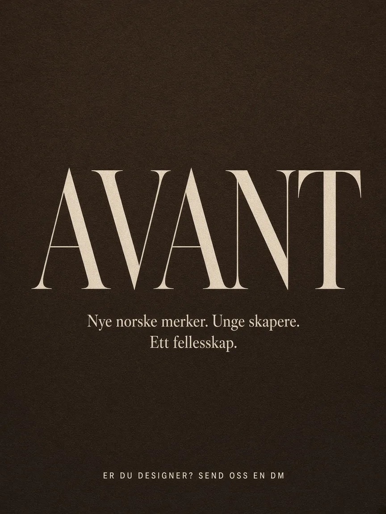
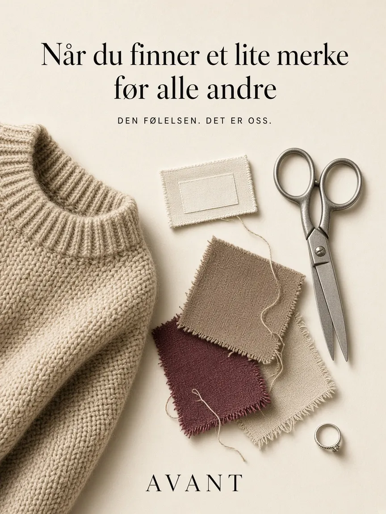

Digitalt magasin · Oslo
AVANT
Nye norske merker. Unge skapere.
Ett fellesskap.

Vårt digitale magasin
Featured Edit
Hvert plagg vi viser fra en skaper på Instagram og TikTok får sin egen side her – med historien, merket og veien videre.
- Vi poster plaggetEn ung skaper styler et plagg fra et lite norsk merke i et innlegg hos oss.
- Plagget får sin egen sideHer i Featured Edit samler vi bilde, merke og en kort tekst om plagget.
- Lenken går begge veierInnlegget lenker hit, og siden lenker tilbake til innlegget og til merket.

Om oss
Fra studieprosjekt til scene
AVANT er en gruppe studenter ved BI Oslo som studerer forretningsutvikling og entreprenørskap.
Vi vil gjøre det lettere å oppdage små norske motemerker – og gi unge skapere en scene å vise frem det de lager. Det startet som et studieprosjekt. Nå bygger vi et digitalt magasin og et fellesskap rundt det.
Tidligere kjent som KANT.
Følg oss på Instagram @avant_edit og TikTok @avant_edit.
Vår visjon
Vår visjon
Vi vil løfte nye norske merker og unge skapere – og bygge et fellesskap der unge kan oppdage, skape og dele.
Små merker fortjener å bli sett. Vi gir dem plass i et magasin laget av og for unge, med skapere som viser frem plaggene på sin egen måte.
Lokal skaperkraft
Vi løfter det som lages her hjemme – av små merker og unge skapere med egne ideer.
Ærlighet og kvalitet
Vi viser plaggene slik de er, og forteller ærlig om merkene bak dem.
Fellesskap
Et sted der unge kan oppdage, skape og dele – sammen.

For designere
Har du et lite norsk merke?
Vi leter etter merkene som skal være med i første utgave av Featured Edit.
Kontakt oss
Si hei
Er du designer, skaper eller bare nysgjerrig? Vi vil gjerne høre fra deg.
Tomine Mariam Krogh · medgründer og deleier